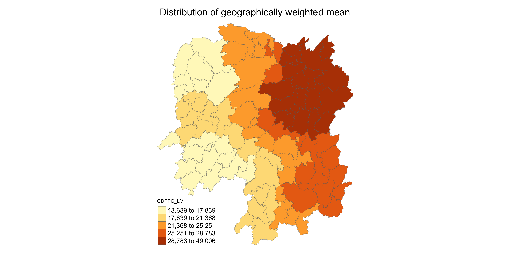
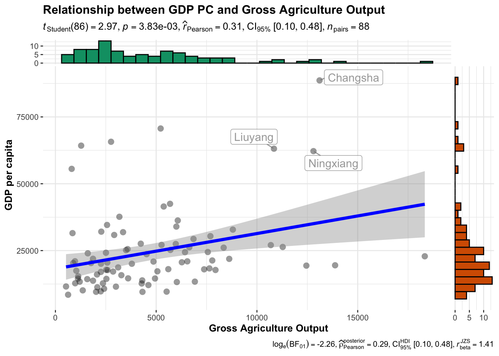

pacman::p_load(sf, ggstatsplot,tmap, tidyverse, knitr, GWmodel)In-class Exercise 4: Geographically Weighted Summary Statistics - GWmodel methods
1 Overview
In this hands-on exercise, we will learn how to compute spatial weights, particularly using GWmodel methods.
2 Installing and launching the R packages
We will use following packages in this exercise:
| Package | Description |
|---|---|
| sf | Provides functions to manage, processing, and manipulate Simple Features, a formal geospatial data standard that specifies a storage and access model of spatial geometries such as points, lines, and polygons. |
| tidyverse | Provides collection of functions for performing data science task such as importing, tidying, wrangling data and visualising data. |
| tmap | Provides functions for plotting cartographic quality static point patterns maps or interactive maps by using leaflet API |
| knitr | Provides a general-purpose tool for dynamic report generation in R using Literate Programming techniques. |
| GWmodel | Package for Exploring Spatial Heterogeneity Using Geographically Weighted Models. |
To install and launch the four R packages.
3 The Data
We will use following geospatial datasets in this exercise:
| Dataset | Description | Format |
|---|---|---|
| Hunan | Hunan county boundary layer geospatial data | ESRI shapefile |
| Hunan_2012 | Contains selected Hunan’s local development indicators in 2012 | CSV file |
4 Data Import and Preparation
We use st_read() of sf package to import Hunan shapefile into R. The imported shapefile will be simple features Object of sf.
hunan <- st_read(dsn = "data/geospatial",
layer = "Hunan")Reading layer `Hunan' from data source
`/Users/cham/project/Geospatial-Analytics/chrismanafe/ISSS626-GAA/in_class_ex/in_class_ex04/data/geospatial'
using driver `ESRI Shapefile'
Simple feature collection with 88 features and 7 fields
Geometry type: POLYGON
Dimension: XY
Bounding box: xmin: 108.7831 ymin: 24.6342 xmax: 114.2544 ymax: 30.12812
Geodetic CRS: WGS 84Rows: 88
Columns: 8
$ NAME_2 <chr> "Changde", "Changde", "Changde", "Changde", "Changde", "Cha…
$ ID_3 <int> 21098, 21100, 21101, 21102, 21103, 21104, 21109, 21110, 211…
$ NAME_3 <chr> "Anxiang", "Hanshou", "Jinshi", "Li", "Linli", "Shimen", "L…
$ ENGTYPE_3 <chr> "County", "County", "County City", "County", "County", "Cou…
$ Shape_Leng <dbl> 1.869074, 2.360691, 1.425620, 3.474325, 2.289506, 4.171918,…
$ Shape_Area <dbl> 0.10056190, 0.19978745, 0.05302413, 0.18908121, 0.11450357,…
$ County <chr> "Anxiang", "Hanshou", "Jinshi", "Li", "Linli", "Shimen", "L…
$ geometry <POLYGON [°]> POLYGON ((112.0625 29.75523..., POLYGON ((112.2288 …Then we will import Hunan_2012.csv into R by using read_csv() of readr package. The output is R dataframe class.
hunan2012 <- read_csv("data/aspatial/Hunan_2012.csv")Rows: 88 Columns: 29
── Column specification ────────────────────────────────────────────────────────
Delimiter: ","
chr (2): County, City
dbl (27): avg_wage, deposite, FAI, Gov_Rev, Gov_Exp, GDP, GDPPC, GIO, Loan, ...
ℹ Use `spec()` to retrieve the full column specification for this data.
ℹ Specify the column types or set `show_col_types = FALSE` to quiet this message.Rows: 88
Columns: 29
$ County <chr> "Anhua", "Anren", "Anxiang", "Baojing", "Chaling", "Changn…
$ City <chr> "Yiyang", "Chenzhou", "Changde", "Hunan West", "Zhuzhou", …
$ avg_wage <dbl> 30544, 28058, 31935, 30843, 31251, 28518, 54540, 28597, 33…
$ deposite <dbl> 10967.0, 4598.9, 5517.2, 2250.0, 8241.4, 10860.0, 24332.0,…
$ FAI <dbl> 6831.7, 6386.1, 3541.0, 1005.4, 6508.4, 7920.0, 33624.0, 1…
$ Gov_Rev <dbl> 456.72, 220.57, 243.64, 192.59, 620.19, 769.86, 5350.00, 1…
$ Gov_Exp <dbl> 2703.0, 1454.7, 1779.5, 1379.1, 1947.0, 2631.6, 7885.5, 11…
$ GDP <dbl> 13225.0, 4941.2, 12482.0, 4087.9, 11585.0, 19886.0, 88009.…
$ GDPPC <dbl> 14567, 12761, 23667, 14563, 20078, 24418, 88656, 10132, 17…
$ GIO <dbl> 9276.90, 4189.20, 5108.90, 3623.50, 9157.70, 37392.00, 513…
$ Loan <dbl> 3954.90, 2555.30, 2806.90, 1253.70, 4287.40, 4242.80, 4053…
$ NIPCR <dbl> 3528.3, 3271.8, 7693.7, 4191.3, 3887.7, 9528.0, 17070.0, 3…
$ Bed <dbl> 2718, 970, 1931, 927, 1449, 3605, 3310, 582, 2170, 2179, 1…
$ Emp <dbl> 494.310, 290.820, 336.390, 195.170, 330.290, 548.610, 670.…
$ EmpR <dbl> 441.4, 255.4, 270.5, 145.6, 299.0, 415.1, 452.0, 127.6, 21…
$ EmpRT <dbl> 338.0, 99.4, 205.9, 116.4, 154.0, 273.7, 219.4, 94.4, 174.…
$ Pri_Stu <dbl> 54.175, 33.171, 19.584, 19.249, 33.906, 81.831, 59.151, 18…
$ Sec_Stu <dbl> 32.830, 17.505, 17.819, 11.831, 20.548, 44.485, 39.685, 7.…
$ Household <dbl> 290.4, 104.6, 148.1, 73.2, 148.7, 211.2, 300.3, 76.1, 139.…
$ Household_R <dbl> 234.5, 121.9, 135.4, 69.9, 139.4, 211.7, 248.4, 59.6, 110.…
$ NOIP <dbl> 101, 34, 53, 18, 106, 115, 214, 17, 55, 70, 44, 84, 74, 17…
$ Pop_R <dbl> 670.3, 243.2, 346.0, 184.1, 301.6, 448.2, 475.1, 189.6, 31…
$ RSCG <dbl> 5760.60, 2386.40, 3957.90, 768.04, 4009.50, 5220.40, 22604…
$ Pop_T <dbl> 910.8, 388.7, 528.3, 281.3, 578.4, 816.3, 998.6, 256.7, 45…
$ Agri <dbl> 4942.253, 2357.764, 4524.410, 1118.561, 3793.550, 6430.782…
$ Service <dbl> 5414.5, 3814.1, 14100.0, 541.8, 5444.0, 13074.6, 17726.6, …
$ Disp_Inc <dbl> 12373, 16072, 16610, 13455, 20461, 20868, 183252, 12379, 1…
$ RORP <dbl> 0.7359464, 0.6256753, 0.6549309, 0.6544614, 0.5214385, 0.5…
$ ROREmp <dbl> 0.8929619, 0.8782065, 0.8041262, 0.7460163, 0.9052651, 0.7…We will also update the attribute table of hunan’s SpatialPolygonsDataFrame with the attribute fields of hunan2012 dataframe. This is performed by using left_join() of dplyr package.
colnames(hunan)[1] "NAME_2" "ID_3" "NAME_3" "ENGTYPE_3" "Shape_Leng"
[6] "Shape_Area" "County" "geometry" colnames(hunan2012) [1] "County" "City" "avg_wage" "deposite" "FAI"
[6] "Gov_Rev" "Gov_Exp" "GDP" "GDPPC" "GIO"
[11] "Loan" "NIPCR" "Bed" "Emp" "EmpR"
[16] "EmpRT" "Pri_Stu" "Sec_Stu" "Household" "Household_R"
[21] "NOIP" "Pop_R" "RSCG" "Pop_T" "Agri"
[26] "Service" "Disp_Inc" "RORP" "ROREmp" hunan <- left_join(hunan,hunan2012) %>%
select(1:3, 7, 15, 16, 31, 32)Joining with `by = join_by(County)`Rows: 88
Columns: 9
$ NAME_2 <chr> "Changde", "Changde", "Changde", "Changde", "Changde", "Chang…
$ ID_3 <int> 21098, 21100, 21101, 21102, 21103, 21104, 21109, 21110, 21111…
$ NAME_3 <chr> "Anxiang", "Hanshou", "Jinshi", "Li", "Linli", "Shimen", "Liu…
$ County <chr> "Anxiang", "Hanshou", "Jinshi", "Li", "Linli", "Shimen", "Liu…
$ GDPPC <dbl> 23667, 20981, 34592, 24473, 25554, 27137, 63118, 62202, 70666…
$ GIO <dbl> 5108.9, 13491.0, 10935.0, 18402.0, 8214.0, 17795.0, 99254.0, …
$ Agri <dbl> 4524.410, 6545.350, 2562.460, 7562.340, 3583.910, 5266.510, 1…
$ Service <dbl> 14100.0, 17727.0, 7525.0, 53160.0, 7031.0, 6981.0, 26617.8, 1…
$ geometry <POLYGON [°]> POLYGON ((112.0625 29.75523..., POLYGON ((112.2288 29…5 Converting to SpatialPolygonDataFrame
GWmodel presently is built around the older
spand notsfformats for handling spatial data in R.
Let’s convert hunan data frame into SpatialPolygonDataFrame
hunan_sp <- hunan %>%
as_Spatial()6 Geographically weighted summary statistics with adaptive bandwidth
6.1 Determine adaptive bandwidth
bw_CV <- bw.gwr(GDPPC ~ 1,
data = hunan_sp,
approach = "CV",
adaptive = TRUE,
kernel = "bisquare",
longlat = TRUE)Adaptive bandwidth: 62 CV score: 15515442343
Adaptive bandwidth: 46 CV score: 14937956887
Adaptive bandwidth: 36 CV score: 14408561608
Adaptive bandwidth: 29 CV score: 14198527496
Adaptive bandwidth: 26 CV score: 13898800611
Adaptive bandwidth: 22 CV score: 13662299974
Adaptive bandwidth: 22 CV score: 13662299974 bw_CV[1] 22bw_AIC <- bw.gwr(GDPPC ~ 1,
data = hunan_sp,
approach = "AIC",
adaptive = TRUE,
kernel = "bisquare",
longlat = TRUE)Adaptive bandwidth (number of nearest neighbours): 62 AICc value: 1923.156
Adaptive bandwidth (number of nearest neighbours): 46 AICc value: 1920.469
Adaptive bandwidth (number of nearest neighbours): 36 AICc value: 1917.324
Adaptive bandwidth (number of nearest neighbours): 29 AICc value: 1916.661
Adaptive bandwidth (number of nearest neighbours): 26 AICc value: 1914.897
Adaptive bandwidth (number of nearest neighbours): 22 AICc value: 1914.045
Adaptive bandwidth (number of nearest neighbours): 22 AICc value: 1914.045 bw_AIC[1] 22The number of optimum neighbour for GDPPC is 22, and apparently it is the same for both CV and AIC this time.
7 Geographically weighted summary statistics with fixed bandwidth
7.1 Determine adaptive bandwidth
bw_CV <- bw.gwr(GDPPC ~ 1,
data = hunan_sp,
approach = "CV",
adaptive = FALSE,
kernel = "bisquare",
longlat = TRUE)Fixed bandwidth: 357.4897 CV score: 16265191728
Fixed bandwidth: 220.985 CV score: 14954930931
Fixed bandwidth: 136.6204 CV score: 14134185837
Fixed bandwidth: 84.48025 CV score: 13693362460
Fixed bandwidth: 52.25585 CV score: Inf
Fixed bandwidth: 104.396 CV score: 13891052305
Fixed bandwidth: 72.17162 CV score: 13577893677
Fixed bandwidth: 64.56447 CV score: 14681160609
Fixed bandwidth: 76.8731 CV score: 13444716890
Fixed bandwidth: 79.77877 CV score: 13503296834
Fixed bandwidth: 75.07729 CV score: 13452450771
Fixed bandwidth: 77.98296 CV score: 13457916138
Fixed bandwidth: 76.18716 CV score: 13442911302
Fixed bandwidth: 75.76323 CV score: 13444600639
Fixed bandwidth: 76.44916 CV score: 13442994078
Fixed bandwidth: 76.02523 CV score: 13443285248
Fixed bandwidth: 76.28724 CV score: 13442844774
Fixed bandwidth: 76.34909 CV score: 13442864995
Fixed bandwidth: 76.24901 CV score: 13442855596
Fixed bandwidth: 76.31086 CV score: 13442847019
Fixed bandwidth: 76.27264 CV score: 13442846793
Fixed bandwidth: 76.29626 CV score: 13442844829
Fixed bandwidth: 76.28166 CV score: 13442845238
Fixed bandwidth: 76.29068 CV score: 13442844678
Fixed bandwidth: 76.29281 CV score: 13442844691
Fixed bandwidth: 76.28937 CV score: 13442844698
Fixed bandwidth: 76.2915 CV score: 13442844676
Fixed bandwidth: 76.292 CV score: 13442844679
Fixed bandwidth: 76.29119 CV score: 13442844676
Fixed bandwidth: 76.29099 CV score: 13442844676
Fixed bandwidth: 76.29131 CV score: 13442844676
Fixed bandwidth: 76.29138 CV score: 13442844676
Fixed bandwidth: 76.29126 CV score: 13442844676
Fixed bandwidth: 76.29123 CV score: 13442844676 bw_CV[1] 76.29126bw_AIC_fixed <- bw.gwr(GDPPC ~ 1,
data = hunan_sp,
approach = "AIC",
adaptive = FALSE,
kernel = "bisquare",
longlat = TRUE)Fixed bandwidth: 357.4897 AICc value: 1927.631
Fixed bandwidth: 220.985 AICc value: 1921.547
Fixed bandwidth: 136.6204 AICc value: 1919.993
Fixed bandwidth: 84.48025 AICc value: 1940.603
Fixed bandwidth: 168.8448 AICc value: 1919.457
Fixed bandwidth: 188.7606 AICc value: 1920.007
Fixed bandwidth: 156.5362 AICc value: 1919.41
Fixed bandwidth: 148.929 AICc value: 1919.527
Fixed bandwidth: 161.2377 AICc value: 1919.392
Fixed bandwidth: 164.1433 AICc value: 1919.403
Fixed bandwidth: 159.4419 AICc value: 1919.393
Fixed bandwidth: 162.3475 AICc value: 1919.394
Fixed bandwidth: 160.5517 AICc value: 1919.391 bw_AIC_fixed[1] 160.5517The fixed bandwidth is different this time for CV and AIC.
7.2 Computing geographically weighted summary statistics
gwstat <- gwss(data = hunan_sp,
vars = "GDPPC",
bw = bw_AIC,
kernel = "bisquare",
adaptive = TRUE,
longlat = TRUE)Let us prepare the output data. We will extract SDF data table from gwss object output from gwss(). It will be converted into data.frame by using as.data.frame() function.
gwstat_df <- as.data.frame(gwstat$SDF)Next, cbind() is used to append the newly derived data.frame onto hunan sf data.frame.
hunan_gstat <- cbind(hunan, gwstat_df)7.3 Visualising geographically weighted summary statistics
Let us visualize the geographically weighted mean.
tm_shape(hunan_gstat) +
tm_fill("GDPPC_LM",
n = 5,
style = "quantile") +
tm_borders(alpha = 0.5) +
tm_layout(main.title = "Distribution of geographically weighted mean",
main.title.position = "center",
main.title.size = 1.8,
legend.text.size = 1.2,
legend.height = 1.50,
legend.width = 1.50,
frame = TRUE)
Let us find out whether is there any relationship between GDP per capita and Gross Industry Output?
ggscatterstats(
data = hunan2012,
x = Agri,
y = GDPPC,
xlab = "Gross Agriculture Output", ## label for the x-axis
ylab = "GDP per capita",
label.var = County,
label.expression = Agri > 10000 & GDPPC > 50000,
point.label.args = list(alpha = 0.7, size = 4, color = "grey50"),
xfill = "#CC79A7",
yfill = "#009E73",
title = "Relationship between GDP PC and Gross Agriculture Output")Registered S3 method overwritten by 'ggside':
method from
+.gg ggplot2`stat_xsidebin()` using `bins = 30`. Pick better value with `binwidth`.
`stat_ysidebin()` using `bins = 30`. Pick better value with `binwidth`.
8 Reference
Kam, T. S. Geographically Weighted Summary Statistics - gwModel methods. ISSS626 Geospatial Analytics and Applications. https://isss626-ay2024-25aug.netlify.app/in-class_ex/in-class_ex04/in-class_ex04